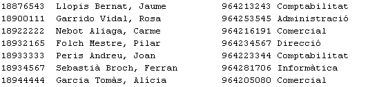

Els fitxers tradicionals, que són molt útils per a aplicacions menudes i concretes, comencen a donar problemes quan el sistema d'informació va creixent. Anem a veure un exemple que il·lustre l'explicació.
Suposem una empresa menuda que ha informatitzat la informació dels seus empleats. En un principi només volia una informació general d'ells, per a poder tenir uns llistats, enviar cartes a tots, etc. Així es podria plantejar un fitxer on guardar la informació dels empleats: nom, cognoms, DNI, adreça, telèfon i data de naixement. Tots els programes que utilitzen el fitxer (en un principi molt pocs) han de tenir la declaració dels camps del fitxer.
Nota
En els exemples que van a continuació s'ha utilitzat el llenguatge de programació C++, a pesar que vosaltres utilitzareu Java en el mòdul de programació serà Java. S'ha triat C++ per la senzillesa de l'explicació. En Java utilitzaríem objectes, i resultaria més llarga l'explicació. I a més són exemples merament il·lustratius, que no heu d'implementar
Per exemple, si són en llenguatge C++, la definició haurà de ser com la següent:
struct TEmpleat
{ char dni[10];
char nom[30];} v_empleat;
char adreca[30];
char telefon[10];
char data_n[10]
FILE *pFEmpleats;
...
I un exemple del contingut d'aquest fitxer podria ser
Suposem ara que l'empresa es planteja ampliar el seu sistema informàtic, i incloure el sou de cada empleat per a poder enviar també les nòmines. Aleshores decideix ampliar el fitxer, incloent el nou camp (sou). El primer que s'hauria de fer és canviar el fitxer, ja que l'estructura no és la mateixa. Aquest procés de substitució seria:
- Creació d'un fitxer nou amb la nova estructura
- Fer un programeta per a passar les dades del fitxer vell al fitxer nou
- Esborrar el vell i en tot cas canviar el nom del nou.
- Després s'hauran de modificar tots els programes que utilitzaven el fitxer per a que l'estructura del fitxer siga la correcta, tornar a compilar-los, ...
struct TEmpleat
{ char dni[10];
char nom[30];
char adreca[30];
char telefon[10];
char data_n[10];
int sou;} v_empleat;
FILE *pFEmpleats;
...
I un exemple del contingut d'aquest fitxer podria ser
Suposem que l'empresa decideix continuar ampliant la informació, i ara vol mantenir informació dels distints departaments, i els empleats que pertanyen. Potser per a no haver de repetir el procés d'adequació, es construeix un fitxer nou d'empleats on està el DNI de l'empleat, el nom, el telèfon i el departament al qual pertany, ja que aquesta és la informació que li interessa.
struct TEmpleat2
{ char dni[10];
char nom[30];} v_empleat2;
char telefon[10];
char departament[20]
FILE *pFEmpleats2;
...
I un exemple del contingut d'aquest fitxer podria ser ara:

En definitiva, com el sistema està orientat als processos, es tendeix, a mida que creix el sistema, a tenir molts fitxers, a més amb molta redundància. El problema de la redundància és, a més de desaprofitar espai, la possible inconsistència de les dades. Per exemple, suposem que ara un determinat empleat canvia de telèfon. No s'haurà de canviar aquest en un fitxer, sinó en dos. Si només es canviara en un d'ells hi hauria inconsistència.
Aquest seria l'esquema d'un sistema basat en fitxers tradicionals.
on recordeu que en cada programa ha d'estar definida l'estructura dels fitxers que utilitza.
Els problemes més importants que porta aquest sistema que ha anat creixent serien:
- Redundància de les dades. Les mateixes dades estan en múltiples fitxers, la qual cosa comporta ocupar més lloc del necessari, i a més una dificultat de manteniment per a que les dades siguen consistents.
- Dificultat per a modificar l'estructura dels fitxers. Ja s'ha comentat abans que s'haurien de modificar tant el fitxer (amb l'actualització del fitxer antic al nou) com els programes que l'utilitzen.
- Problemes de seguretat. Quan hi ha molts usuaris que accedeixen als fitxers s'ha de vigilar molt que no es puguen fer actualitzacions no autoritzades
Tornarem a comentar els problemes quan vegem la comparació entre fitxers tradicionals i Bases de Dades.